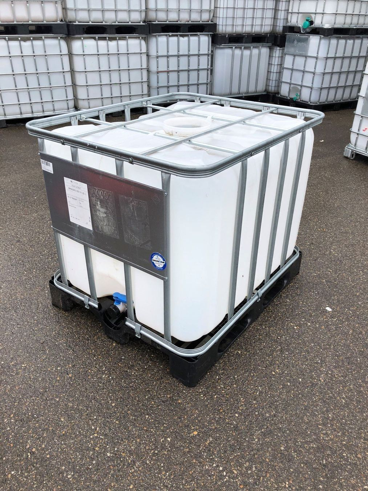

Bewässerung¶
Zusammenfassung¶
Die Sicherstellung einer robusten, effizienten und zumindest teilweise autonomen Bewässerung stellt ein enormes Arbeitspaket dar. Es gilt deshalb das Konzept noch so zu formulieren, damit dieses schrittweise umgesetzt werden kann. Zudem bedarf es noch Abklärungen in jedem Bereich sowie jeweils ein Detailkonzept.
In einem ersten Schritt gilt es die als erstes bepflanzte Fläche oberhalb der Strasse zu bewässern. Nach Möglichkeit voll automatisiert / autonom. Ideen sind vorhanden. Implementation ausstehend.
Wasserentnahme¶
Unweit von den Parzellen entfernt gibt es jeweils Möglichkeiten Wasser anzuzapfen. Entweder an bestehender Infrastruktur oder aus einer Suone.
Einige Schwierigkeiten lassen sich erkennen.
- Wasser ist nicht immer und nicht in konstanter Menge verfügbar
- Besonders in der Trockenperiode können die Quellen versiegen. Bzw. Wasser wird eingespart
- Im Wasser ist Sediment vorhanden.
- dies kann förderlich sein für den Boden
- Erschwert aber den Einsatz von Ventilen und dergleichen und verlangt regelmässigen Unterhalt. Materialverschleiss ist höher.
Um diese zwei Probleme zu kontern kann ein Speicher eingebaut werden. Dieser kann eine kurze Periode ohne Wasser überbrücken und das Sediment kann sich darin setzen (Siehe Abbildung IBC-Container).

Geplantes Vorgehen --> Wasserfassung
Lösungsansätze¶
Nach Möglichkeit wird eine Bewässerung angestrebt, die keiner Hähne oder Ventile Bedarf. Das Wasser soll auf einfache, am besten natürliche, Weise in die Konturlinien gelangen und somit die Parzelle bewässern. Dies entspricht etwa der Variante 2.1
Varianten¶
Es gibt verschiedene Ansätze wie die Bewässerung stattfinden kann.
1.1 Je Ventil zum füllen und entleeren mit Speicher¶
Pro
+ Maximale Kontrolle
+ kein kontinuierlicher Wasserfluss (keine Erosion oder dergleichen)
Con
- doppelter Verschleiss, doppelte points of failure
- Sediment im oberen Ventil
1.2 Zulauf auf Niveau mit Fassung¶
Die Leitung von der Suone zum Speicher wird so verbaut, dass bei vollem Tank kein Wasser fliesst.
Pro
- Tank immer so voll wie möglich
- weniger Verschleiss
Con
- exakter Aufbau nötig
Genauere Umsetzung in
1.3 Zulauf mit Schwimmer¶
Pro
- Tank immer so voll wie möglich
Con
- stabiles Ventil notwendig
- Druck darf nicht zu hoch sein
2.1 Behälter mit Syphon¶
Ein Teil des Wassers wird von der Suone abgeleitet und fliesst durch die Konturlinien. Überschuss fliesst zurück in die Suone.
Ein Rohr oder Fass, welches sich konstant füllt und periodisch über ein Syphon geleert wird.
Konkret; ein Rohr, welches in die Suone passt, nach oben Schwemmmaterial abfiltert. Dieses ist nach unten verschlossen. Eine Öffnung sorgt aber für einen konstanten Abfluss und beugt so Sediment Ansammlung vor. Eine weitere Bohrung, etwas oberhalb ist über einen Schlauch mit Tanks verbunden und füllt diese.
Aus den Tanks fliesst eine kleine konstante Menge in ein weiteres Fass welches mit einem Syphon bestückt ist, dieses wird somit gefüllt und schwämmt regelmässig Wasser in die Konturlinien.
Pro
- keine Mechanik/Elektronik
- relativ einfache Konstruktion
- Kombiniert die Möglichkeit auf Tanks mit Sedimentschutz und Simplizität
Con
- schwieriger zu regeln
- Viele Verbindungen, viel Material
Berechnung des Speichervermögens¶
Verbrauch [m^3/Woche]: Abhängig von Bepflanzung, steigt mit Fortschritt, abhängig von Wetter und Saison. Tanks sollten aber erweitert werden können. Werden die angedachten IBC Container als Speicher verwendet, so kann das Speichervermögen jeweils in 1m^3 Schritten erweitert werden.
Der Speicher sollte für Extrembedingungen ausgelegt sein. D.h. eine sehr heisse Periode im Sommer ohne Zufluss aber mit hohem Verbrauch.
Art der Bewässerung 2¶
Strukturell¶
Um den Wasserverbrauch grundsätzlich zu verringern sollen in einem ersten Schritt Strukturelle eingriffe unternommen werden.
Hier gibt es zwei Kategorien:
- Gründüngung:
- Evaporation wird verhindert - Wasserspeichervermögen vergrössert
- Hangneigung abflachen:
- Konstruktionen wie Swales, Terrassen, Teiche halten Wasser vor Ort fest.
Da es sich um eine Hanglage handelt macht es Sinn solche features von oben nach unten umzusetzen.
Genauere Umsetzung in Tasks/Anfang Terrassierung
Automatisierung¶
Ansätze¶
Es ist ein einfaches elektrisches Ventil vorgesehen, das entweder eine Schwall-Bewässerung, einen Sprinkler oder eine sonstige Bewässerungsanlage speist. Das Wasser kann an der bestehenden Infrastruktur oder direkt an der Suonen gefasst werden. Es gilt aber abzuklären wie viel Wasser entnommen werden kann.1
Idee¶
Die Bewässerung soll so schnell wie möglich unabhängig, d.h. automatisch ablaufen. Somit muss mam möglichst wenig Zeit damit verbringen. Es geht nicht vergessen und es kann aufgezeichnet werden wie sich das ganze System verhält. Mit den gesammelten Daten kann das System später gesteuert werden.
Umsetzung¶
Das Ventil sollte recht einfach und kostengünstig über eine kleine Solarzelle gespiesen werden können.
Es bietet sich an einen Microcontroller zu verwenden der Umgebungsbedingungen erfasst und das Ventil ansteuert.
Dies kann in einem ersten Schritt auch zeitabhängig erfolgen, sodass das Ventil alle n Stunden m Minuten aktiv ist.
Kann dann mit einer Durchflussmessung erweitert werden, womit sichergestellt wird das eine gewünschte Menge Wasser zugeführt wird.
Zudem sollte es möglich sein über Erdsonden/Erdelektroden die Leitfähigkeit zu messen. Dieser Wert sollte unter anderem abhängig von der Bodenfeuchte sein.
Wichtig ist in jedem Fall, das die Parameter einfach verändert werden können und das aufgezeichnet wird was passiert. Sodass möglichst schnell ein robustes System entsteht das möglichst wenig Wartung und Intervention bedarf.
Hierfür macht es aber Sinn das das Ventil manuell angesteuert werden kann und diese Ansteuerung aufgezeichnet wird um das gewünschte Verhalten später in der Software abzubilden. Idee sogar ein neurales Netz einzusetzen
Komponentenliste¶
- Microcontroller (Raspi Pico) 6.-
- Ventil 5v 22.-
- Powerbank 22.-
- Schalter 4.-
- Durchflusssensor 15.-
- Gehäuse 5.-
- Kabel 20.-?
- Elektroden ?
Total: etwa 100.-
Erstellt : 14. August 2023